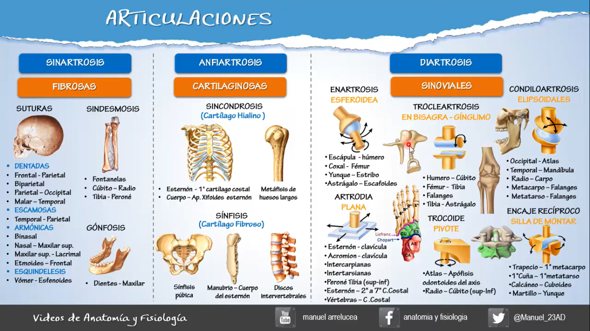
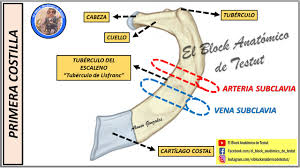
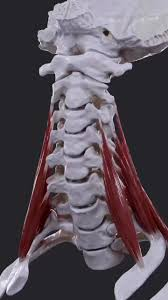

ClinicusMed · Dossiê Clinicus — Padrão de Excelência

| Região | Vértebras | Característica |
|---|---|---|
| Cervical | C1-C7 (7 vértebras) | Porção mais superior; mais móvel; vértebras pequenas/leves. Atlas (C1) e Áxis (C2) permitem movimentos especiais da cabeça |
| Torácica | T1-T12 (12 vértebras) | Cada vértebra se articula com um par de costelas, formando a caixa torácica. Apófises espinosas longas, voltadas pra baixo |
| Lombar | L1-L5 (5 vértebras) | Parte mais baixa e robusta da coluna móvel. Maiores, pois sustentam o peso do corpo |
| Sacra | S1-S5 (5 vértebras fundidas) | Formam o Sacro, conecta-se aos ossos ilíacos |
| Coccígea | 3-5 vértebras fundidas | Formam o Cóccix — vestígio da cauda embrionária |
| Curvatura | Região | Direção |
|---|---|---|
| Lordose Cervical | Cervical | Côncava pra trás |
| Cifose Torácica | Torácica | Convexa pra trás |
| Lordose Lombar | Lombar | Côncava pra trás |
| Cifose Sacra | Sacra | Convexa pra trás |
| Parte | Característica |
|---|---|
| Corpo Vertebral | Parte anterior, suporta o peso corporal |
| Arco Vertebral | Envolve o canal vertebral, protege a medula espinal |
| Apófises Transversas | Projeções laterais, pra inserção muscular |
| Apófise Espinosa | Projeção posterior, palpável nas costas |
| Forame Vertebral | Orifício por onde passa a medula espinal |
| Apófises Articulares | Formam as articulações entre vértebras adjacentes |
Localizados entre os corpos vertebrais, atuam como amortecedores.
| Componente | Característica |
|---|---|
| Núcleo Pulposo | Parte central, gelatinosa |
| Anel Fibroso | Camada externa, resistente |
| Região | Detalhe |
|---|---|
| Cervical | Mais móvel; vértebras com forames transversos e apófise espinosa bífida/bifurcada. C1 (Atlas) e C2 (Áxis) são atípicas. C6 tem o tubérculo carotídeo (tubérculo de Chassaignac) |
| Torácica | Articula-se com as costelas e o esterno (articulação costocondral). Corpo maior que as cervicais. NÃO tem apófise espinosa bifurcada |
| Lombar | Corpo vertebral volumoso (sustenta peso). Processos espinosos robustos, incluindo processos mamilares e acessórios |
| Face/Região | Característica |
|---|---|
| Face Anterior (Pélvica) | Côncava e lisa. Linhas transversais (fusão das vértebras). 4 pares de forames sacros anteriores (nervos sacros anteriores) |
| Face Posterior (Dorsal) | Convexa e rugosa. Crista sacra mediana (apófises espinosas fundidas). Cristas sacras laterais (apófises transversas fundidas). Hiato sacro (abertura inferior) |
| Faces Laterais | Faces auriculares — superfícies articulares com o ílio (articulação sacroilíaca) |
| Base do Sacro | Promontório (articula com L5). Asas do sacro (articulam com o ílio) |
| Vértice do Sacro | Articula-se com o cóccix |
| Articulação | Descrição |
|---|---|
| Intervertebrais | Entre corpos vertebrais, via discos |
| Zigapofisárias | Entre apófises articulares |
| Atlanto-occipital | Permite movimento de flexão/extensão da cabeça ("dizer sim") |
| Atlantoaxoidea | Permite movimento de rotação da cabeça ("dizer não") |
| Patologia | Descrição |
|---|---|
| Hérnia de Disco | Protrusão do núcleo pulposo, pode comprimir nervos |
| Escoliose | Desvio lateral anormal da coluna |
| Cifose (patológica) | Curvatura excessiva na região torácica |
| Lordose (patológica) | Curvatura exagerada na região lombar |
| Estenose Espinal | Estreitamento do canal vertebral, comprime medula/nervos |
Vamos acompanhar um motorista de caminhão de 38 anos com dor lombar irradiando pra perna, relacionando o caso à estrutura do disco intervertebral. O caso evolui em 3 níveis — clica em cada um pra ver como as coisas vão se desenrolando.
O sistema guarda, no seu navegador, quais cards você já sabe bem e quais precisam voltar mais cedo — cada vez que você avalia um card, ele recalcula quando ele deve voltar.
10 questões, do mais básico ao mais puxado. Escolhe uma alternativa, depois clica em "Ver comentário completo" — vale a pena ler até quando você acerta, porque o comentário explica cada alternativa, não só a certa.
Todas as imagens desse capítulo, reunidas num só lugar pra revisão rápida.

